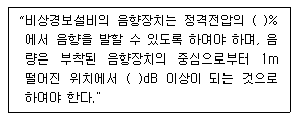

소방설비산업기사(전기) (2010-03-07 기출문제)
1과목: 소방원론
1. 할로겐화합물 소화약제에 대한 설명으로 옳은 것은?
- 연소 연쇄반응을 촉진시킨다.
- 소화 후 잔사가 남지 않는 장점이 있다.
- 할론 104는 소화효과도 우수하고 독성도 없다.
- 할론 1301, 할론 1211은 에탄의 유도체이다.
(정답률: 63%)

2. 다음 중 폭발을 일으킬 위험이 가장 낮은 물질은?
- 수소가스
- 마그네슘분
- 밀가루
- 시멘트가루
(정답률: 86%)
3. 할론 1301에서 숫자“0”은 무슨 원소가 없다는 것을 뜻하는가?
- 탄소
- 브롬
- 불소
- 염소
(정답률: 82%)
4. 전기시설물에 적응성이 없는 소화방식은?
- 이산화탄소에 의한 소화
- 할론 1301에 의한 소화
- 마른 모래에 의한 소화
- 물분무에 의한 소화
(정답률: 47%)
5. 다음 중 물과 반응하여 수소가 발생하지 않는 것은?
- Na
- K
- S
- Li
(정답률: 74%)
6. 일반적으로 목조건출물의 화재시 발화에서 최성기까지의 소요시간은 어는 정도인가? (단. 풍속이 거의 없을 경우를 가정한다.)
- 1분미만
- 4~14분
- 30분~60분
- 90분 이상
(정답률: 85%)
7. 다음 중 바닥부분의 내화구조 기준으로 틀린 것은?
- 철근콘크리트조로 두께가 5cm 이상인 것
- 철골철근콘크리트조로서 두께가 10cm 이상인 것
- 철재로 보강된 콘크리트 불록조. 벽돌조 또는 석조로서 철재에 덮은 콘크리트 블록 등의 두께가 5cm 이상인 것
- 철재의 양면을 두께 5cm 이상의 철망모르타르 또는 콘크리트로 덮은 것
(정답률: 57%)
8. 피난계획의 일반원칙 중 fail safe에 대한 설명으로 옳은 것은?
- 한 가지 피난기구가 고장이 나도 다른 수단을 이용할 수 있도록 고려하는 것
- 피난설비를 반드시 이동식으로 하는 것
- 본능적 상태에서도 쉽게 식별이 가능하도록 그림이나 색채를 이용하는 것
- 피난수단을 조작이 간편한 원시적인 방법으로 설계하는 것
(정답률: 78%)
9. 가연성 기체 또는 액체의 연소범위에 대한 설명 중 틀린 것은?
- 연소 하한과 연소 상한의 범위를 나타낸다.
- 연소 하한이 낮을수록 발화위험이 높다.
- 연소범위가 넓을수록 발화위험이 낮다.
- 연소범위는 주위온도와 관계가 있다.
(정답률: 78%)
10. 다음 중 전기 화재에 해당되는 것은?
- A급 화재
- B급 화재
- C급 화재
- D급 화재
(정답률: 90%)
11. 소방시설의 분류에서 다음 중 소화설비에 해당하지 않는 것은?
- 스프링클러 설비
- 수동식소화기
- 옥내소화전설비
- 연결송수관 설비
(정답률: 75%)
12. 중질유가 탱크에서 조용히 연소하다 열유층에 의해 가열된 하부의 물이 폭발적으로 끓어 올라와 상부의 뜨거운 기름과 함께 분출하는 현상을 무엇이라 하는가?
- 플래쉬 오버
- 보일오버
- 백드래프트
- 풀오버
(정답률: 85%)
13. 액화 천연가스(LNG)의 주성분은?
- CH4
- H2
- C3H8
- C2H2
(정답률: 72%)
14. 인화점(flash point)를 가장 옳게 설명한 것은?
- 가연성 액체가 증기를 계속 발생하여 연소가 지속될 수 있는 최저온도
- 가연성 증기 발생시 연소범위의 하한계에 이르는 최저온도
- 고체와 액체가 평형을 유지하며 공존할 수 있는 온도
- 가연성 액체의 포화증기압이 대기압과 같아지는 온도
(정답률: 67%)
15. 부피로는 메탄 80%, 에탄 15%, 프로판 4%, 부탄1%인 혼합기체가 있다. 이 기체이 공기 중에서의 폭발한계는 약 몇 vol%인가? (단, 공기 중 단일 가스의 폭발하한계는 메탄 5vol%, 에탄 2vol%, 프로판 2vol%, 부탄 1.8vol%이다.)
- 2.2
- 3.8
- 4.9
- 6.2
(정답률: 76%)
16. 연소의 3요소에 해당하지 않는 것은?
- 점화원
- 연쇄반응
- 가연물질
- 산소공급원
(정답률: 88%)
17. 다음 중 착화온도가 가장 높은 물질은?(오류 신고가 접수된 문제입니다. 반드시 정답과 해설을 확인하시기 바랍니다.)
- 황린
- 아세트알데히드
- 에탄
- 이황화탄소
(정답률: 44%)
18. 철골콘크리트조의 기둥에서 내화구조의 기준으로 옳은 것은?
- 작은 지름 15cm 이상으로서 철골을 두께 4cm 이상의 철망 몰탈로 덮은 것
- 작은 지름 20cm 이상으로서 철골을 두께 7cm 이상의 콘크리트 불록으로 덮은 것
- 작은 지름 25cm 이상으로서 철골을 두께 5cm 이상의 콘크리트 덮은 것
- 작은 지름 30cm 이상으로서 철골은 두께 3cm 이상의 석재로 덮은 것
(정답률: 72%)
19. 자연 발화가 잘 일어나기 위한 조건이 아닌 것은?
- 주위 온도가 높다.
- 열전도율이 낮다.
- 표면적이 넓다.
- 발열랑이 작다
(정답률: 69%)
20. 다음 중 가연성 물질이 아닌 것은?
- 수소
- 산소
- 메탄
- 암모니아
(정답률: 70%)
2과목: 소방전기회로
21. 유도 전동기에 인가되는 전압과 주파수를 동시에 반환시켜 직류 전동기와 동등한 제어성능을 얻을 수있는 방식은?
- 가변전압 가변주파수 제어
- 교류 귀환제어
- 교류 1단 제어
- 교류 2단 제어
(정답률: 79%)
22. 이미터 접지 증폭기에서 ß=60 Ico=0.1mA ,Ib=0.25mA 일때 컬랙터 전류는 몇 [mA]인가?
- 10.2
- 21.1
- 32.4
- 40.5
(정답률: 53%)
23. 브리지 정류회로에서 다이오드 1개가 개방되었을 때 출력전압은?
- 입력전압의 1/3크기이다.
- 입력전압의 3/4크기이다.
- 반파 정류전압이다.
- 출력전압은 0이다.
(정답률: 79%)
24. 전기계측 계기의 일반적인 구성요소가 아닌 것은?
- 내압장치
- 구동장치
- 제어장치
- 제동장치
(정답률: 64%)
25. 논리식 Y=(A+B)(A+C)와 등가인 것은?
- B(A+C)
- C(A+B)
- B+AC
- A+BC
(정답률: 80%)
26. 동선의 길이를 2배로 고르게 늘리니 전선의 단면적이 1/2로 되었다. 이때 저항은 처음의 몇 배가 되는가?
- 2배
- 4배
- 8배
- 16배
(정답률: 74%)
27. 같은 규격의 축전지 2개를 병렬로 연결한 경우 전압과 용량의 변화에 대한 설명으로 알맞은 것은?
- 전압과 용량이 모두 2배가 된다.
- 전압과 용량이 모두 처음 것의 1/2로 된다.
- 전압은 불변이고 용량은 2배가 된다.
- 전압은 2배가 되고 용량은 불변이다.
(정답률: 70%)
28. 계전기 접점의 불꽃을 소거할 목적으로 사용하는 것은?
- 바리스터
- 서미스터
- 바랙터다이오드
- 터널다이오드
(정답률: 73%)
29. 권수비가 그림과 같이 100/24인 변압기의 1차측에 100V, 60Hz의 교류 전압을 인가하면 2차측 전압은?
- 24
- 48
- 100
- 240
(정답률: 47%)
30. 입력 A가 1이고, B가 0일 때 출력 X가 1로 되지 않는 게이트는?
- NAND게이트
- OR게이트
- NOR게이트
- EXCLUSIVE OR 게이트
(정답률: 67%)
31. 다음 설명 중 옳지 않은 것은?
- 정전 유도에 의하여 작영하는 힘은 반발력이다.
- 정전용량이란 콘덴서가 전할력 축척하는 능력이다.
- 콘덴서에 전압을 가하는 순간단락 상태가 된다.
- 같은 부호의 전하끼리는 반발력이 생긴다.
(정답률: 51%)
32. 저항체의 일종으로 온도보정용으로 사용되는 소자는?
- 제너다이오드
- 사이리스터
- 서미스터
- 트라이악
(정답률: 71%)
33. 목표값이 시간에 관계없이 항상 일정한 값을 가지는 제어는?
- 정치제어
- 추종제어
- 비율제어
- 프로그램제어
(정답률: 80%)
34. 시퀀스 제어의 문자 기호와 용어가 옳지 않은 것은?
- ZCT-영상변류기
- CB-차단기
- PF-역률계
- THC- 열동계전기
(정답률: 68%)
35. 부하 전압과 전류를 측정하기 위한 연결방법으로 옳은 것은?
- 전압계 : 부하와 병렬, 전류계 : 부하와 직렬
- 전압계 : 부하와 병렬, 전류계 : 부하와 병렬
- 전압계 : 부하와 직력, 전류계 : 부하와 직렬
- 전압계 : 부하와 지력, 전류계 : 부하와 병렬
(정답률: 85%)
36. 비율차동계전기의 사용목적으로 가장 알맞은 것은?
- 과부하 및 단락사고 검출
- 저전압 검출
- 발전기나 변압기의 내부고장 검출
- 과전압 검출
(정답률: 62%)
37. 일정한 직류 전원에 저항 R[옴]을 접속하여 1[A]가 흐르는 회로가 있다. 이 회로에 흐르는 전류값을 20% 증가 시키기 위해서는 저항값을 약 얼마로 하여야 하는가?
- 1.25
- 1.2
- 0.83
- 0.73
(정답률: 53%)
38. 무효전력이 0이 되는 부하는?
- 용량리액턴스만의 부하
- 저항만의 부하
- 유도리액턴스만의 부하
- 용량리액턴스와 유도리액턴스만으로 구성된 부하
(정답률: 61%)
39. 주위온도가 15도일 때 저항이 0.25옴이 되는 구리선이 있다. 화재로 인하여 주위온도가 75도로 될 때 구리선의 저항은 약 몇 옴으로 되는가? (단, 구리선의 고유저항은 0.0043 이다.)
- 0.06
- 0.10
- 0.31
- 1.25
(정답률: 36%)
40. 서보기구를 이용한 제어에 해당하는 것은?
- 추적용 레이더 장치
- 정전압 장치
- 전기로 온도제어 장치
- 발전기의 조속기
(정답률: 58%)
3과목: 소방관계법규
41. 소방 기본법의 목적과 거리가 먼 것은?
- 화재의 예방, 경계, 진압
- 국민의 생명, 신체 및 재산보호
- 소방기술관리 및 진흥
- 공공의 안녕질서 유지와 복리증진
(정답률: 74%)
42. 자체 소방대를 설치하여야 하는 사업소는 몇 류위험물을 취급하는 제조소인가?
- 제 1류
- 제 2류
- 제 3류
- 제 4류
(정답률: 68%)
43. 소방시설기준 적용의 특례에서 특정소방대상물의 관계인이 소방시설을 갖추어야 함에도 불구하고 관련 소방시설을 설치하지 아니할 수 있는 특정 소방대상물을 설명한 것 중 옳지 않은 것은?
- 피난위험도가 낮은 특정소방대상물
- 화재안전기준을 적용하기가 어려운 특정소방 대상물
- 화재안전기준을 달리 적용하여야 하는 특수한 용도 또는 구조를 가진 특정소방대상물
- 위험물안전관리법 제19조의 규정에 따른 자체 소방대가 설치된 특정소방대상물
(정답률: 41%)
44. 소방공사감리업의 등록기준에서 전문소방공사감리업을 하고자 하는 경우 갖추어야할 장비에 속하지 않는 것은?(관련 규정 개정전 문제로 여기서는 기존 정답인 2번을 누르면 정답 처리됩니다. 자세한 내용은 해설을 참고하세요.)
- 수압기
- 전기절연내력시험기
- 검량계
- 하론농도 측정기
(정답률: 68%)
45. 2급 방화관리대상물의 방화관리자로 선임될 수 있는 자격기준으로 알맞은 것은?
- 전기기능사 자격을 가진 자
- 소방서에서 1년 이상 화재진압 또는 보조업무에 종사한 경력이 있는 자
- 경찰공무원으로 2년이상 근무한 경력이 있는 자
- 의용소방대원으로 2년 이상 근무한 경력이 있는 자
(정답률: 56%)
46. 화재 경계지구 지정대상지역에 해당되지 않는 곳은?
- 공장, 창고가 밀집한 지역
- 석유화학제품을 생산하는 공장이 있는 지역
- 시장지역
- 소방용수시설 또는 소방 출동로가 있는 지역
(정답률: 82%)
47. 특정소방대상물 중 노유자시설에 속하지 않는 것은?
- 유치원
- 정신보건시설
- 경로당
- 요양시실
(정답률: 71%)
48. 피난층에 대한 설명으로 알맞은 것은?
- 지상1층
- 2층 이하로 쉽게 피난할 수 있는 층
- 지상으로 통하는 계단이 있는 층
- 곧바로 지상으로 통하는 출입구가 있는 층
(정답률: 74%)
49. 위험물 제조소등의 관계인은 제조소등의 용도를 폐지한때 에는 제조소등의 용도를 폐지한 날부터 며칠이내에 시.도지사에게 신고하여야 하는가?
- 7일
- 10일
- 14일
- 30일
(정답률: 60%)
50. 위험물 안전관리법령상 제4류 위험물에 속하는 것으로 나열된 것은?
- 특수인화물, 질산염류, 황린
- 알코올, 황화린 니트로 화합물
- 동식물유류, 알코올류, 특수인화물
- 알킬알루미늄, 질산, 과산화수소
(정답률: 72%)
51. 신출 건축물 중 연면적 몇 제곱미터 이상인 특정 소방대상물은 성능위주설계를 하여야 하는가? (단, 주택으로 쓰이는 층수는 5개층 이상인 주택인 아파트를 제외한다)
- 10만 제곱미터
- 20만 제곱미터
- 100만 제곱미터
- 500만 제곱미터
(정답률: 46%)
52. 화재에 관한 위험경보와 관련하여 기상법 관련 규정에 따른 이상 기상의 예보 또는 특보가 있는 때에 화재에 관한 경보를 발하고 그에 따른 조치를 할 수 있는 자는?
- 소방서장
- 기상청장
- 시.도지사
- 국무총리
(정답률: 71%)
53. 옥외 연결송수관 및 옥내에 방수구가 부설된 옥내소화전설비. 스프링클러설비. 간이 스프링클러설비 또는 연결 살수설비를 화재안전기준에 적합하게 설치한 경우 그 설비의 유효범위안의 부분에서 설치가 면제되는 것은?
- 연소방지설비
- 상수도 소화용수설비
- 물분무 등 소화설비
- 연결송수관 설비
(정답률: 48%)
54. 화재. 재난. 재해 그 밖의 위급한 사항이 발생한 경우 소방대가 현장에 도착할 때까지 관계인의 소방활동에 포함되지 않는 것은?
- 불을 끄거나 불이 번지지 아니하도록 필요한 조치
- 소방 활동에 필요한 보호장구 지급 등 안전을 위한 조치
- 경보를 울리는 방법으로 사람을 구출하는 조치
- 대피를 유도하는 방법으로 사람을 구출하는조치
(정답률: 79%)
55. 소방용기계.기구에 속하지 않는 것은?(오류 신고가 접수된 문제입니다. 반드시 정답과 해설을 확인하시기 바랍니다.)
- 화학반응식거품소화제
- 방염액. 방염도료 및 방염성 물질
- 자동소화설비의 기기 중 유수 검지장치
- 가스누설경비기
(정답률: 37%)
56. 위험물 제조소등별로 설치하여야 하는 경보설비의 종류에 포함되지 않는 것은?
- 자동화재탐지설비
- 비상경보설비
- 비상벨설비
- 확성장치
(정답률: 35%)
57. 소방서의 종합상황실의 실장이 소방본부의 종합상황실에 지체 없이 보고하여야 하는 상황에 해당하지 않는 것은?(관련 규정 개정전 문제로 여기서는 기존 정답인 3번을 누르면 정답 처리됩니다. 자세한 내용은 해설을 참고하세요.)
- 사망자 5인 이상 발생한 화재
- 사상자가 10인 이상 발생한 화재
- 이재민이 50인 이상 발생한 화재
- 재산피해액이 20억원 이상 발생한 화재
(정답률: 71%)
58. 소방시설공사업자가 소속 소방기술자를 소방시설 공사 현장에 배치하지 않았을 경우 얼마의 과태료에 처하는가?
- 100만원 이하
- 200만원 이하
- 300만원 이하
- 400만원 이하
(정답률: 36%)
59. 간이 스프링클러설비를 설치하여야할 특정소방대상물에 해당되지 않는 것은?(관련 규정 개정전 문제로 여기서는 기존 정답인 2번을 누르면 정답 처리됩니다. 자세한 내용은 해설을 참고하세요.)
- 근린생활시설로서 사용하는 바닥면적의 합계가 500제곱미터 이상인 것은 전층
- 근린생활시설로서 사용하는 바닥면적의 합계가 1000제곱미터 이상인 것은 전층
- 교육연구시설 내에 있는 합숙소로서 연면적 50제곱미터 이상인 것
- 교육연구시설 내에 있는 합숙소로서 연면적 100제곱미터 미만인 것
(정답률: 64%)
60. 화재발생 사실을 통보하는 기계.기구 또는 설비인경보설비가 아닌 것은?
- 무선통신보조설비
- 비상방송설비
- 단독경보형 감지기
- 자동화재속보설비
(정답률: 66%)
4과목: 소방전기시설의 구조 및 원리
61. 비상조명등에서 비상전원으로 전환되는 때 램프가 없는 경우에는 몇 초 이내에 예비전원으로부터의 비상전원의 공급을 차단하여야 하는가?
- 1초
- 3초
- 5초
- 10초
(정답률: 63%)
62. ( ), ( )에 들어갈 수치로 알맞은 것은?

- 20 , 90
- 20 , 125
- 80 , 90
- 80 , 125
(정답률: 77%)
63. 비상방송설비에서 기동장치에 따른 화재신고를 수신한 후 필요한 음량으로 화재발생 상황 및 피난에 유효한 방송이 자동으로 개시될 때까지의 소요시간은?
- 10초 이하
- 15초 이하
- 20초 이하
- 30초 이하
(정답률: 76%)
64. 연면적 3500미터제곱이고, 지하3층, 지상6층인 소방대상물에 있어서 건물의 지하2층에서 화재가 발생하였을 경우 비상방송설비가 우선적으로 경보를 발하도록 하여야하는 층에 속하지 않는 것은?
- 지상1층
- 지하1층
- 지하2층
- 지하3층
(정답률: 77%)
65. 주요구조부가 내화구조로 된 바닥면적 70미터제곱인 소방대상물에 설치하는 열전대식 차동식분포형 감지기이 열전대부는 몇 개 이상으로 하여야 하는가?
- 1개 이상
- 2개 이상
- 3개 이상
- 4개 이상
(정답률: 46%)
66. 자동화재속보설비의 속보기는 자동화재탐지설비로 부터 작동신호를 수신하는 경우 몇 초 이내에 소방관서에 자동적으로 신호를 발하여 통보하여야 하는가?(오류 신고가 접수된 문제입니다. 반드시 정답과 해설을 확인하시기 바랍니다.)
- 5초
- 10초
- 20초
- 30초
(정답률: 48%)
67. 외기에 면하여 상시 개방된 부분이 있는 차고, 주차장. 창고 등에 있어서는 외기에 인하는 각 부분으로 부터 몇 미터 미만의 범위 안에 있는 부분은 경계구역의 면적에 산입하지 아니하는가?
- 1m
- 3m
- 5m
- 10m
(정답률: 57%)
68. 비상콘센트설비의 전원회로의 전압과 공급용량의 연결이 올바른 것은?
- 단상교류 200V - 공급용량 3KVA 이상
- 단상교류 220V - 공급용량 1.5KVA 이상
- 3상 교류 200V - 공급용량 3KVA 이상
- 3상 교류 380V - 공급용량 1.5KVA 이상
(정답률: 76%)
69. 무선통신보조설비의 누설동축케이블 및 공중선은 고압의 전로로부터 최소 몇 미터 이상 떨어진 위치에 설치하여야 하는가? (단. 당해 전로에 정전기 차폐장치를 유효하게 설치한 경우가 아니다.
- 0.5m
- 1.0m
- 1.5m
- 2.0m
(정답률: 70%)
70. 비상조명등의 설치기준에서 조도는 비상조명등이 설치된 장소의 각 부분의 바닥에서 몇 룩스이상이 되도록 하여야 하는가?
- 1룩스
- 5룩스
- 20룩스
- 30룩수
(정답률: 68%)
71. 측광식 위치표시는 주위 조도 0룩스에서 60분간 발광 후 직선거리 몇 미터 떨어진 위치에서 보통 시력으로 표시면의 문자 또는 화살표 등을 쉽게 식별할 수있는 것이어야 하는가?
- 3m
- 10m
- 20m
- 30m
(정답률: 60%)
72. 자동화재탐지설비의 발신기를 기능에 따랄 구분할 때 포함되지 않는 것은?
- M형
- P형
- R형
- T형
(정답률: 32%)
73. 자동화재탐지설비의 경계구역 설정시 지하구 또는 터널에 있어서 하나의 경계구역 길이는 몇 미터 이하로 하여야 하는가?
- 50m
- 60m
- 600m
- 700m
(정답률: 69%)
74. 비상콘센트설비의 비상전원 중 자가발전설비는 비상콘센트설비를 유효하게 몇 분 이상 작동시킬 수 있는 용량이어야 하는가?
- 10분
- 20분
- 40분
- 120분
(정답률: 77%)
75. 유도표지는 계단에 설치하는 것을 제외하고는 각층마다 복도 및 통로의 각 부분으로부터 하나의 유도표지까지의 보행거리는 몇 미터 이하가 되는 곳에 설치하여야 하는가?
- 5m
- 10m
- 15m
- 20m
(정답률: 55%)
76. 소방시설용 비상전원 수전설비에서 소방회로 전용의 것으로서 분기 개폐기. 분기 과전류차단기. 그 밖의 선용기기 및 배선을 금속제외함에 수납한 것은?
- 전용배전반
- 공용배전반
- 전용분전반
- 공용분전반
(정답률: 64%)
77. 경계전로의 정격전류가 60A를 초과하는 전로에 한하여 사용하는 누전경보기의 수신부는?
- 특급
- 1급
- 2급
- 3급
(정답률: 78%)
78. 누전화재의 발생을 표시하는 누전경보기의 표시등이 켜질 때의 색깔 표시는?
- 적색
- 황색
- 청색
- 녹색
(정답률: 67%)
79. 거주, 집무, 작업, 집회, 오락 그 밖의 이와 유사한 목적을 위하여 계속적으로 사용하는 거실, 주차장 등 개방된 통로에 설치하는 유도등으로 피난의 방향을 명시하는 것은?
- 피난구 유도등
- 계단통로유도등
- 객석유도등
- 거실통로유도등
(정답률: 55%)
80. 가스누설경보기의 구조에 따른 분류에서 탐지부와 수신부가 1개의 상자에 넣어 일체로 되어 있는 형태의 것은?
- 일체형
- 집합형
- 단독형
- 복합형
(정답률: 40%)